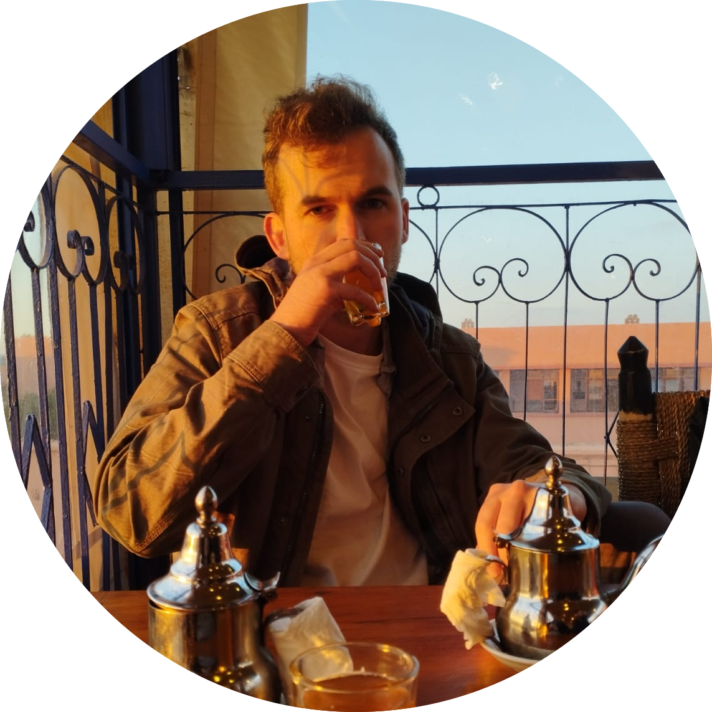

Welcome!

I’m an Australian PhD Student in Computational Biophysics based in Lyon, France.
Right now I’m working on atomistic and coarse-grained molecular dynamics simulations of lipid droplets (and more). We’ve spent a lot of time trying to understand their biogenesis, a non-equilibrium phenomena which is quite difficult to study with experiments.
Speaking more broadly, I’m interested in the fields of multiscale modelling and non-equilibrium simulations, or rather, anything that allows us to build more computational models to study biology in ways that cannot otherwise be done.
I hold an MPhil with Honours in Biomedical Engineering from UTS, where I studied the interactions steroid molecules with biological membranes using both MD simulations and experimental techniques. Prior to that, I received a Bachelor of Medical Sciences degree from Macquarie University.